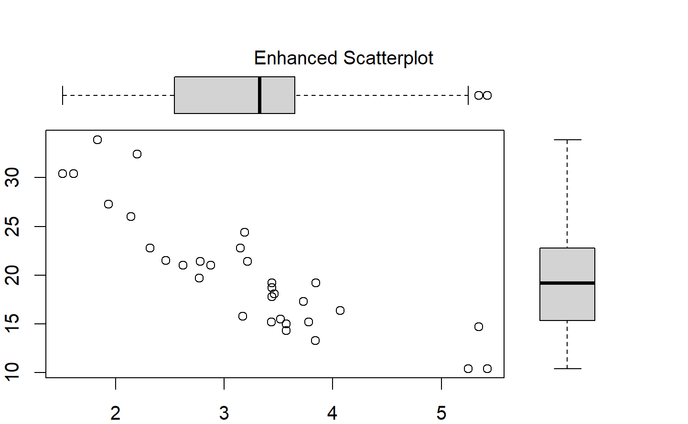
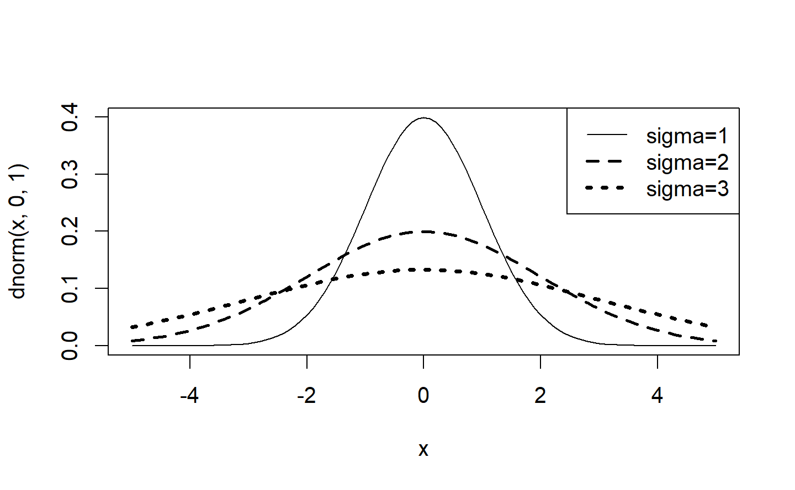
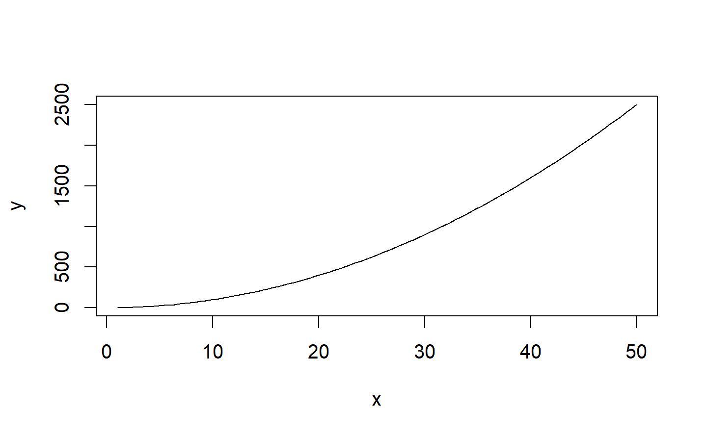
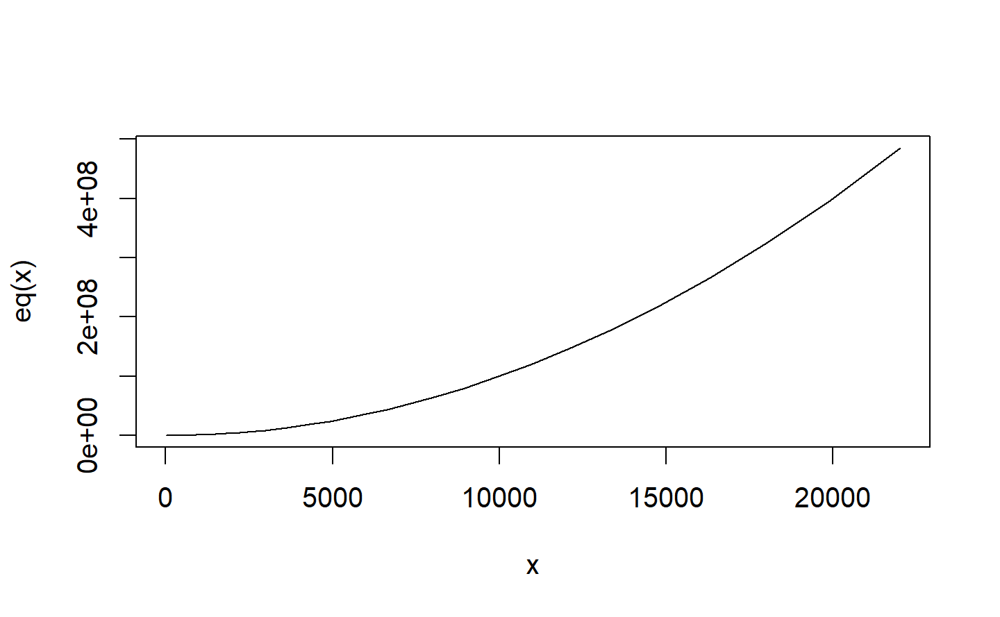

Chapter 8 基本繪圖
8.1 reference
一般視窗作業系統的繪圖，會有一個抽象物件device在這個device上，有一個抽象物件canvas，和繪圖工具例如，水彩筆之類的抽象物件可以指定顏色，線條粗細等等。
8.2 basic
基本繪圖函數，plot(),hist()
㊙️ 怎樣快速查詢？
- ??draw
- ?plot : 參考其中的
plot.default查看圖形選項
8.2.1 plot
可能最常用的繪圖函數就是plot(),而這個函數比較常用的選項有： * type: 僅分佈點（預設）是否連線等基本模板。 * lty: 線條樣式line style * lwd: 線條寬度line width * col: * pch: mark
| type | description |
|---|---|
| p | points |
| l | lines |
| o | overplotted points and lines |
| b, c | points (empty if “c”) joined by lines |
| s, S | stair steps |
| h | histogram-like vertical lines |
| n | does not produce any points or lines |

繪製向量 中的資料
繪製data.frame 中的資料

plot()函數，新建視窗然後畫出 weight vs. miles per gallon.
abline() 不會開啟新視窗做圖，abline()的語法如下:
abline(a = NULL, b = NULL, h = NULL, v = NULL, reg = NULL,coef = NULL, untf = FALSE, …)
代表的意思是畫出一條直線a+bx ，其中a代表截距常數，b則是斜率常數。例如
Y=2X+1，則對應的函數為 abline(a=1,b=2) 。
plot(sin, -pi, 2*pi)
8.2.3 Histograms
函數hist(x)：其中
x是一個數字向量，
選項freq=FALSE 則是畫出 probability densities 而不是次數 frequencies.
選項：breaks= ## 則是控制分成幾份。
Simple Histogram

分成12份，顏色紅色。
自行給定分割點

8.2.3.1 Add a Normal Curve
x <- mtcars$mpg
h<-hist(x, breaks=10, col="red", xlab="Miles Per Gallon",
main="Histogram with Normal Curve")
xfit<-seq(min(x),max(x),length=40)
yfit<-dnorm(xfit,mean=mean(x),sd=sd(x))
yfit <- yfit*diff(h$mids[1:2])*length(x)
lines(xfit, yfit, col="blue", lwd=2)hint: 因為\(pdf=\frac{\frac{n}{N}}{bin \quad width}\) 所以\(n=pdf\times N \times (bin \quad width)\)
Histograms can be a poor method for determining the shape of a distribution because it is so strongly affected by the number of bins used.
$breaks
[1] 10 12 14 16 18 20 22 24 26 28 30 32 34
$counts
[1] 2 1 7 3 5 5 2 2 1 0 2 2
$density
[1] 0.0312 0.0156 0.1094 0.0469 0.0781 0.0781 0.0312 0.0312 0.0156 0.0000
[11] 0.0312 0.0312
$mids
[1] 11 13 15 17 19 21 23 25 27 29 31 33
$xname
[1] "x"
$equidist
[1] TRUE
attr(,"class")
[1] "histogram"
8.2.4 Kernel Density Plot
核密度畫圖(Kernal density plots) 用來觀察一個變量，比較有有效率，指令如：plot(density(x)) 其中x 是一個數字向量。
8.2.5 Saving Graphs
可以利用menu存檔，例如File -> Save As. 也可以利用函數：
| Function | Output to |
|---|---|
| pdf(“mygraph.pdf”) | pdf file |
| win.metafile(“mygraph.wmf”) | | windows metafile |
| png(“mygraph.png”) | png file |
| jpeg(“mygraph.jpg”) | jpeg file |
| bmp(“mygraph.bmp”) | bmp file |
| postscript(“mygraph.ps”) | pos | postscript file |
8.3 多個圖和疊圖
傻瓜指令例如 (plot, hist, boxplot, etc.)基本上會開啟新視窗，然後畫圖。這裡討論幾種自行控制的方法：
多視窗(multiple windows)、覆圖(combining figure) 和疊圖(overlay)討論。
8.3.1 多視窗
開多視窗的方法根據OS而不同，如下：
| Function | Pla | Platform |
|---|---|
| windows() | Wi | Windows |
| X11() | Unix |
| quartz() | Mac | Mac |
要關閉視窗，可以用函數dev.off()
如果要知道目前的視窗是那一個，可以參考 dev.cur()。
Note:
如果目前有多個圖窗，則一直呼叫這個函數dev.off()，會依次關閉視窗，直到函數傳回NULL。
驗證上面的說法可以利用
png
2
png
2
 上面的範例，可以看到圖裝置的編號都是2，也就是多個圖在一個device上。。
上面的範例，可以看到圖裝置的編號都是2，也就是多個圖在一個device上。。
png
2
png
2
null device
1
討論下面的輸出結果，我只看到一個視窗： hint: 無法在rmarkdown 執行？確認，在rscript中執行正常。
測試
dev.new()
plot(1:1)
dev.new()
plot(2,2)
dev.set(dev.prev()) # go back to first
title(main="test dev 1")
dev.set(dev.next()) # go to second
title(main="test dev 2")8.3.2 合併 Plots
同時顯示多個plot的結果，可以利用函數par() or layout( )。
函數par( )的選項有：
mfrow=c(nrows, ncols) 填plot的方向為橫行。
mfcol=c(nrows, ncols) 填入的方向為直行。
變數<-par() 會把目前的參數拿出存到變數。本來是要在設定完新參數以後，在放回去，但是，有些參數是無法修改的，因此不要紀錄了（直接英翻中，不要唯獨＝確定（T）
#### par()
about par()
✔️範例:
線條形式type的幾種基本類型
範例
#attach(mtcars)
par(mfrow=c(2,2))
plot(wt,mpg, main="Scatterplot of wt vs. mpg")
plot(wt,disp, main="Scatterplot of wt vs disp")
hist(wt, main="Histogram of wt")
boxplot(wt, main="Boxplot of wt")
1x3 layout
更多的圖形控制: 在散佈圖中加入boxplot
par(mar=rep(2,4))
# 整個圖的座標，想成左下角(0,0)右上角(1,1)
par(fig=c(0,0.8,0,0.8))#左下(0,0)右上(0.8,0.8)
#左下(x1,y1)右上(x2,y2) => c(x1,x2,y1,y2)
plot(mtcars$wt, mtcars$mpg, xlab="Car Weight",
ylab="Miles Per Gallon")
par(fig=c(0,0.8,0.55,1), new=TRUE)
boxplot(mtcars$wt, horizontal=TRUE, axes=FALSE)
par(fig=c(0.65,1,0,0.8),new=TRUE)
boxplot(mtcars$mpg, axes=FALSE)
mtext("Enhanced Scatterplot", side=3, outer=TRUE, line=-3)
練習1
讓下面兩個圖不重疊
r boxplot(mtcars$wt, axes=FALSE) par(new=TRUE) boxplot(mtcars$mpg, axes=FALSE)
練習2
讓disp,mpg 的histogram 疊在一起:

練習3
測試這篇文章
8.3.2.1 layout()
函數 layout( ) 的使用方法為 layout(mat) 其中 mat 的元素用來指定圖形號碼。例如分成4個格子,順序為左右上下(byrow=TRUE)
如layout(matrix(c(1,1,2,3), 2, 2, byrow = TRUE)) 對應如下表
| 1 | 1 |
|—|—|
| 2 | 3 |
# One figure in row 1 and two figures in row 2
#attach(mtcars)
layout(matrix(c(1,1,2,3), 2, 2, byrow = TRUE))
hist(wt)
hist(mpg)
hist(disp)
#dev.off()
在layout()函數中，也可以更改圖形大小，其參數 為：
widths= 數字向量，用來代表column 寬度
heights= 數字向量，用來代表row 高度
note:Relative widths are specified with numeric values. Absolute widths (in centimetres) are specified with the lcm() function.
8.4 分組畫圖
8.4.1 Comparing Groups VIA Kernal Density
The sm.density.compare( ) function in the sm package allows you to superimpose the kernal density plots of two or more groups. The format is sm.density.compare(x, factor) where x is a numeric vector and factor is the grouping variable.
8.4.1.1 Compare MPG distributions for cars with 4,6, or 8 cylinders
library(sm)
attach(mtcars)
#create value labels
cyl.f <- factor(cyl, levels= c(4,6,8),
labels = c("4 cylinder", "6 cylinder", "8 cylinder"))
#plot densities
sm.density.compare(mpg, cyl, xlab="Miles Per Gallon")
title(main="MPG Distribution by Car Cylinders")
#add legend via mouse click
colfill<-c(2:(2+length(levels(cyl.f))))
legend(locator(1), levels(cyl.f), fill=colfill)
8.5 Add texts within the graph
The text() function can be used to draw text inside the plotting area. A simplified format of the function is :
text(x, y, labels) x and y: 文字座標; labels: 例如 “a label” pos: 下左上右，1234 cex: 放大倍數，例如，0.65。 範例 :
d<-head(mtcars)
plot(d[,'wt'], d[,'mpg'],
main="Milage vs. Car Weight\n~~~~~~~~~~~~~~~~~~~",
xlab="Weight", ylab="Miles/(US) gallon",
pch=19, col="darkgreen")
text(d[,'wt'], d[,'mpg'], row.names(d), cex=1,pos=3,col="red") 
8.5.1 Add text in the margins of the graph
在圖形周圍給文字:
mtext(text, side=3)
text : 例如“a label”
side : 哪一側 :
順時針
1: 下
2: 左
3: 上
4: 又
範例 :

8.6 函數畫圖
 問題是如果x座標的增加不是1單位?
問題是如果x座標的增加不是1單位?

 問題:解釋為何錯誤
問題:解釋為何錯誤
Error in y(x):
沒有這個函數 "y"
問題:如何修正下面的錯誤?
solution:
8.7 plot example
正常

❓ curv 高階指令？
eq = function(x){x*x}
y<-eq(1:50)
curve(eq, 1,50,xlab="x", ylab="y",lwd=5,col="yellow")
polygon(1:50,y,lty=2,col="red")
eq = function(x){x*x}
y<-eq(1:50)
curve(eq, 1,50,xlab="x", ylab="y",lwd=5,col="yellow")
polygon(c(1:50,50),c(y,0),lty=2,col="red") 💯 ⭕ 第一個點和最後一個點會連在一起。然後填色。
💯 ⭕ 第一個點和最後一個點會連在一起。然後填色。